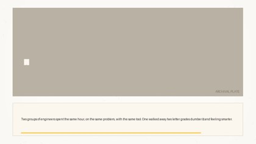
B01 · ACCUMULATE · TITLE
· 8.2s · scene 0
Two groups of engineers spent the same hour, on the same problem, with the same tool. One walked away two letter grades dumber — and feeling smarter.
[TITLE] Why the group that learned less was sure it learned more
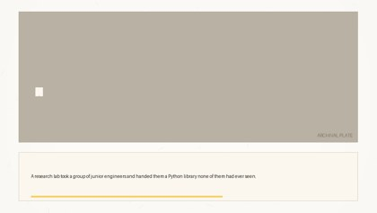
B02 · ACCUMULATE · PHOTO
· 6.2s · scene 0
A research lab took a group of junior engineers and handed them a Python library none of them had ever seen.
[PHOTO] engineers at terminals, archival, push-in
B03 · ACCUMULATE · ISOTYPE
· 8.3s · scene 0
Half got an AI assistant. Half had to write every line by hand. Same problem, same clock — exactly one difference: who did the typing.
[ISOTYPE] cohort splits into terracotta and blue halves
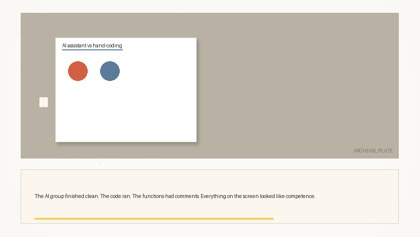
B04 · ACCUMULATE · FOOTAGE
· 7.4s · scene 0
The AI group finished clean. The code ran. The functions had comments. Everything on the screen looked like competence.
[FOOTAGE] clean code assembling itself, check mark
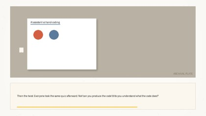
B05 · ACCUMULATE · QUOTE
· 7.4s · scene 0
Then the twist. Everyone took the same quiz afterward. Not 'can you produce the code' — 'do you understand what the code does?'
[QUOTE] the quiz question, highlighter on 'understand'
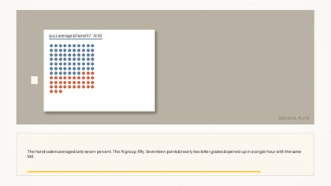
B06 · ACCUMULATE · CHART
· 10.2s · scene 0
The hand-coders averaged sixty-seven percent. The AI group, fifty. Seventeen points — nearly two letter grades — opened up in a single hour with the same tool.
[CHART] 67 vs 50, gap bracket lands on 'Seventeen'
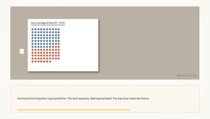
B07 · ACCUMULATE · ANNOTATE
· 7.5s · scene 0
And here's the thing — the AI group felt fine. The work was done. Nothing had failed. The trap never looks like failure.
[ANNOTATE] terracotta ring around the check mark
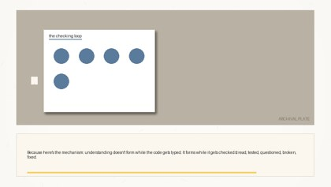
B08 · ACCUMULATE · DIAGRAM
· 10.5s · scene 0
Because here's the mechanism: understanding doesn't form while the code gets typed. It forms while it gets checked — read, tested, questioned, broken, fixed.
[DIAGRAM] the checking loop draws itself; typing sits outside it
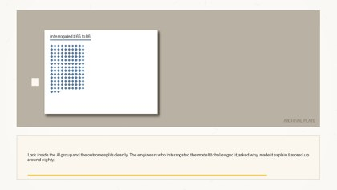
B09 · ACCUMULATE · CHART
· 10.0s · scene 0
Look inside the AI group and the outcome splits cleanly. The engineers who interrogated the model — challenged it, asked why, made it explain — scored up around eighty.
[CHART] interrogation range bar 65-86 rises in blue
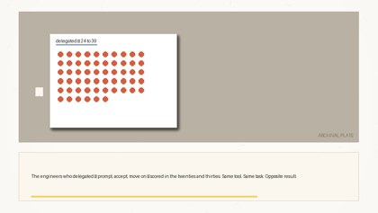
B10 · ACCUMULATE · CHART+ANNOTATE
· 9.2s · scene 0
The engineers who delegated — prompt, accept, move on — scored in the twenties and thirties. Same tool. Same task. Opposite result.
[CHART+ANNOTATE] delegation bar 24-39; gold bar sweeps the gap
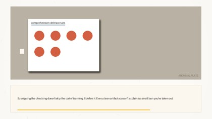
B11 · ACCUMULATE · ISOTYPE
· 8.6s · scene 0
So skipping the checking doesn't skip the cost of learning. It defers it. Every clean artifact you can't explain is a small loan you've taken out.
[ISOTYPE] artifact cards pile up; terracotta debt meter ticks
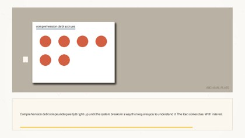
B12 · ACCUMULATE · PLATE+ANNOTATE
· 9.1s · scene 0
Comprehension debt compounds quietly — right up until the system breaks in a way that requires you to understand it. The loan comes due. With interest.
[PLATE+ANNOTATE] the break arrives; DUE stamp lands
B13 · ACCUMULATE · CARD
· 9.9s · scene 0
The machine is a better typist than you will ever be. Let it type. But understanding forms during the checking — and the checking was never the machine's job. Keep it.
[CARD] endcard — Let it type. Keep the checking.